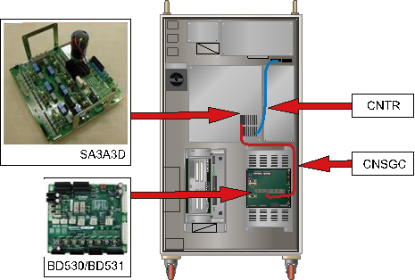

기존 에러코드: E0010 AMP의 회생방전 저항 과열
1.1.52.1. 개요
로봇의 감속 또는 중력방향으로 하강 시 발생한 회생전력을 저항을 통하여 방전하는데 이 저항의 과열에 관련한 에러입니다. 과열 검지센서 회로의 고장 및 케이블 문제로 발생할 수 있습니다.
1.1.52.2. 원인 및 점검방법
|
과열 에러를 검지하는 경로에 이상이 발생하였거나 저항값이 변화하였습니다.
<모터 오프 상태에서도 항상 발생하는 경우> (1) 과열 에러 검지 관련 케이블을 점검하여 주십시오. n CNTR 케이블의 저항을 점검하여 주십시오. n CNSGC 케이블을 교체한 후 점검하여 주십시오. (2) 과열 에러 검지 관련 부품을 점검하여 주십시오. n BD530/BD531 보드를 교체한 후 점검하여 주십시오. n 서보 구동장치를 교체한 후 점검하여 주십시오. |
(1)과열 에러 검지 케이블을 점검하여 주십시오.
회생저항 과열 에러는 회생저항에 부착된 과열센서 양단의 on/off 상태를 CNTR 케넥터를 통하여 모니터링하여 서보 구동장치에서 검지합니다. 검지된 에러는 CNSGC 케이블을 통하여 BD530/BD531보드에서 소프트웨어로 처리합니다.
(a) Hi5a-S00 제어기
(b) Hi5a-S30 제어기
(c) Hi5a-N00 제어기

(d) Hi5a-N30 제어기
그림 1.161 회생저항 과열 에러 관련 부품 배치
n CNTR 케이블 점검
과열 검지센서를 연결하는 CNTR 케넥터에서 센서의 이상 유무를 점검하여 주십시오. 센서는 정상 상태에서는 0.1옴 미만으로 측정되어야 합니다.
(a) Hi5a-S00 제어기
(b) Hi5a-S30 제어기
(C) Hi5a-N00 제어기
(d) Hi5a-N30 제어기
그림 1.162 CNTR에서 저항 값 측정
n CNSGC 케이블 교체 점검
CNSGC 케이블을 정상품과 교체하여 에러가 발생하지 않으면 케이블의 접속 불량입니다. CNSGC 케이블을 정상품으로 교체하여 사용하시기 바랍니다.
(2) 과열 에러 검지 관련 부품을 점검하여 주십시오.
n BD530/BD531 교체 점검
BD530/BD531을 정상품과 교체하여 에러가 발생하지 않으면 해당 보드의 불량입니다. BD530/BD531을 정상품으로 교체하여 사용하시기 바랍니다.
n 서보 구동장치의 교체 점검
회생방전 저항 과열 에러 검지하는 모듈은 다음과 같습니다.
Ø Hi5a-S제어기 : 중형용 SD3X3Y, 소형용 SD3A3D
Ø Hi5a-N제어기 : 중형용 SD1L2C, 소형용 SA3A3D
현재 사용 중인 제어기의 구성품을 확인하신 후 점검하시기 바랍니다. 정상품과 교체하여 에러 재발 여부를 확인하여 주십시오.